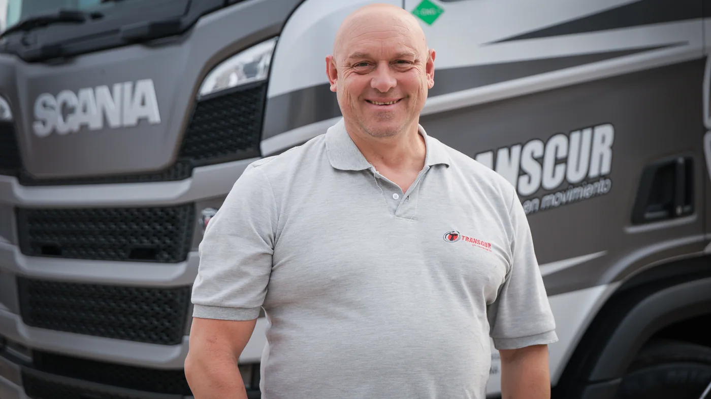

Transcur incorporó cuatro camiones Scania para su actividad de transporte de bebidas de larga distancia. La noticia, publicada en la sala de prensa de Scania Argentina el 10 de septiembre de 2026, combina tres unidades a GNC con una de la plataforma Super a diésel.
El comunicado identifica los vehículos a gas como R550 6x2 preparados para configuraciones bitren de hasta 75 toneladas. También informa que la empresa tiene 34 camiones, 17 de ellos Scania, y realiza operaciones entre Buenos Aires, Mendoza, San Juan, Salta y Tucumán.
La relación comercial comenzó en 2008. En esta nueva etapa, Transcur destaca el confort y el acompañamiento de CVC, concesionario que aporta asesoramiento y mantenimiento. La publicación no ofrece mediciones propias de consumo de las cuatro unidades recién incorporadas: los resultados de esa operación deberán observarse durante su uso.
Una flota puede crecer con más de una tecnología
Análisis de Zabala Repuestos. El interés del caso está en la convivencia de alternativas. Una empresa con diferentes destinos puede evaluar cada asignación por sus condiciones de trabajo, en lugar de suponer que una única motorización resolverá todos los recorridos de la misma manera.
Para quien organiza viajes, esa evaluación comienza antes de elegir el vehículo: kilómetros diarios, carga, ventanas de entrega y disponibilidad de abastecimiento. El camión debe encajar en un circuito que ya tiene compromisos con clientes, horarios y recursos de mantenimiento.
El abastecimiento forma parte del recorrido
Al estudiar una unidad a GNC, conviene dibujar la jornada completa y revisar los puntos de carga compatibles con el equipo. No alcanza con conocer la distancia entre ciudades: también importan el acceso, el horario y la posibilidad de atender al conjunto utilizado.
Un circuito frecuente facilita reunir información comparable. Es útil registrar el tiempo dedicado a abastecer, las esperas y los desvíos. Esos datos permiten distinguir el precio del combustible del costo operativo de conseguirlo y continuar el viaje en las condiciones previstas.

La capacidad debe relacionarse con el servicio
Cuando se analiza una configuración de mayor capacidad, la pregunta práctica es cuánto trabajo útil puede realizar dentro de un circuito concreto. Carga, instalaciones del cliente, maniobras y organización de las entregas forman parte de esa decisión.
La preparación técnica mencionada en un anuncio no define por sí sola dónde trabajará cada unidad. Antes de planificar una nueva asignación, el operador debe confirmar la configuración del conjunto y las condiciones del trayecto correspondiente. El objetivo es que la capacidad anunciada pueda aprovecharse en el servicio real.
Cómo comparar el desempeño sin mezclar jornadas
Una comparación útil debería agrupar viajes semejantes y conservar sus diferencias. Si un vehículo transporta otra carga o encuentra más esperas, el resultado necesita esa explicación. Mirar solamente un total mensual puede ocultar cambios importantes en el trabajo realizado.
Además del consumo, conviene observar disponibilidad, mantenimiento y cumplimiento de entregas. Un tablero sencillo puede reunir esos datos sin producir un informe interminable: fecha, unidad, recorrido, carga, abastecimiento e incidencias ofrecen un punto de partida comprensible.
Qué cambia para el taller y los repuestos
La convivencia de tecnologías exige identificar con precisión cada unidad. El nombre de la marca o un parecido entre cabinas no alcanzan para resolver una consulta de piezas. Chasis, configuración y referencia del componente permiten orientar el pedido y confirmar compatibilidades.
También interesa conocer qué tareas puede realizar el taller habitual y cuáles requieren asistencia especializada. Un plan de mantenimiento funciona mejor cuando esas responsabilidades están definidas antes de que aparezca una necesidad urgente durante un viaje.
El conductor aporta información que la planilla no muestra
La experiencia diaria ayuda a interpretar los registros. Acceso a los puntos de carga, comodidad de los mandos y organización de las paradas son aspectos que conviene conversar con quienes usan el vehículo. Una observación repetida merece quedar documentada y revisarse con el responsable de la flota.
La incorporación de Transcur ofrece un ejemplo cercano de renovación por etapas. Para el transporte argentino, la enseñanza práctica es vincular tecnología, recorrido y respaldo con información propia. Así, cada nueva unidad puede evaluarse por el servicio que efectivamente presta y por la capacidad de sostenerlo durante el tiempo.